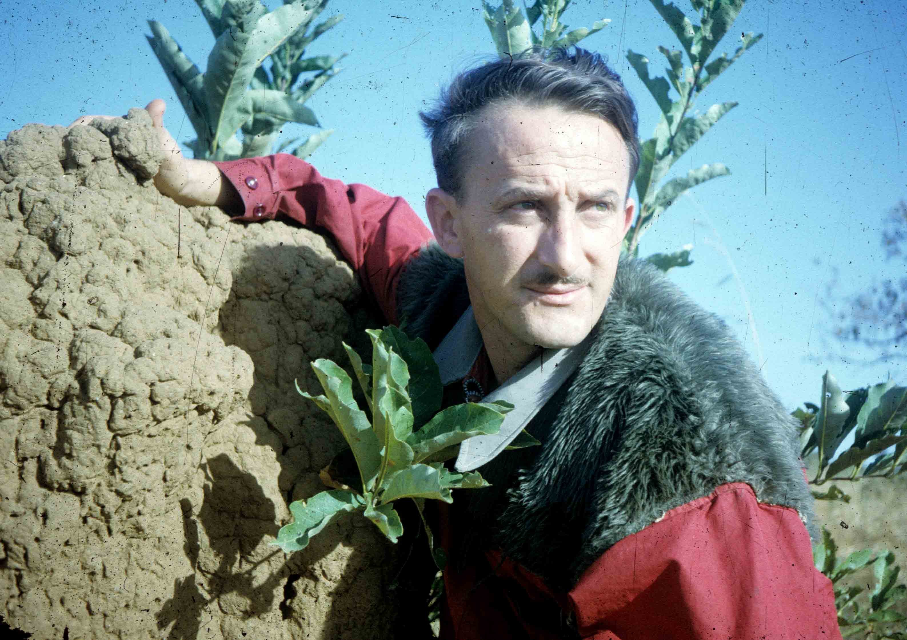

Bruno Carollo è nato il 9 giugno 1930 a Carrè (Vicenza). Ha frequentato il seminario comboniano e lo scolasticato a Venegono dove ha emesso i voti perpetui il 9 settembre 1955. Ordinato sacerdote il 15 giugno 1957, ha lavborato per un breve periodo in Italia ed è stato destinato in Uganda nel 1959 dove ha lavorato ininterrottamente fino al 2004. Attualmente si trova nel centro confratelli ammalati/anziani ‘Giuseppe Ambrosoli’ di Milano. P. Bruno ha lavorato tra il popolo Lango dell’Uganda producendo, oltre alla grammatica, testi di catechismo e canzoni liturgiche nella lingua locale di cui è uno dei maggiori esperti.
Tra le sue produzioni: Practical Lango Grammar, Trieste 199
